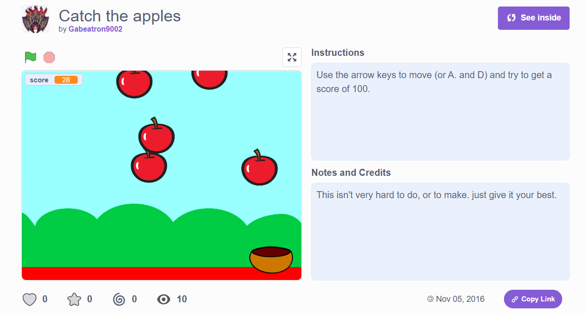
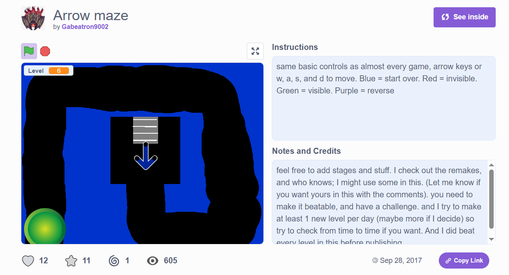
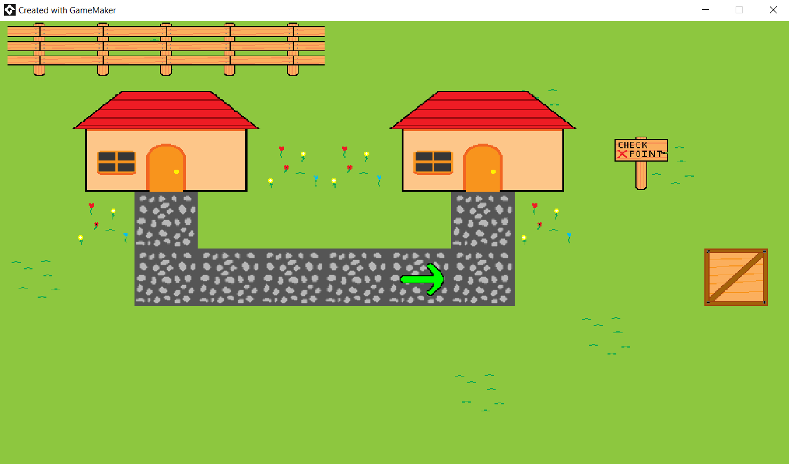

Home
One of the earliest coding languages I learned was Scratch, a site that allows people to make their own games or animations and post them for others to see. I started out with simpler projects, like an apple catching game or allowing people to draw on the screen with different colored pencils and different widths for said pencil. These were my early projects which were simple, but also a part of the learning process.


My first big personal project with with scratch to make the game Arrow Maze (named Arrow Adventure at the time) which took about a week or two and was constantly being tested by myself and classmates, and became a success at school still being used as an example in robotics several years later. I ended up trying to make a second one (named Arrow Maze 2) and while I never ended up finishing the game (mainly just some final "super levels"), it too became popular and introduced several mechanics to challenge myself as a programmer. My favorite features I made for it I would have to say are ice physics in certain levels accompanied by icicles that shake a bit before falling (making you restart the level if you got hit).
After that, I had put time into making mods of some games and trying my hand at making games in a different game engine. While I had started several projects with big ideas, some were too big for my knowledge about the software I was using (especially considering they had their own coding language to them) and either stopped early in development or on pause for school. Feel free to take a look at some of my other hobbies here.

Top